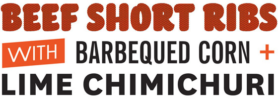
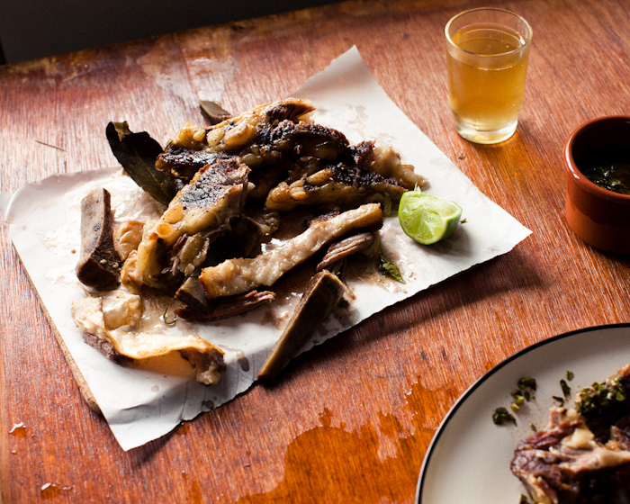
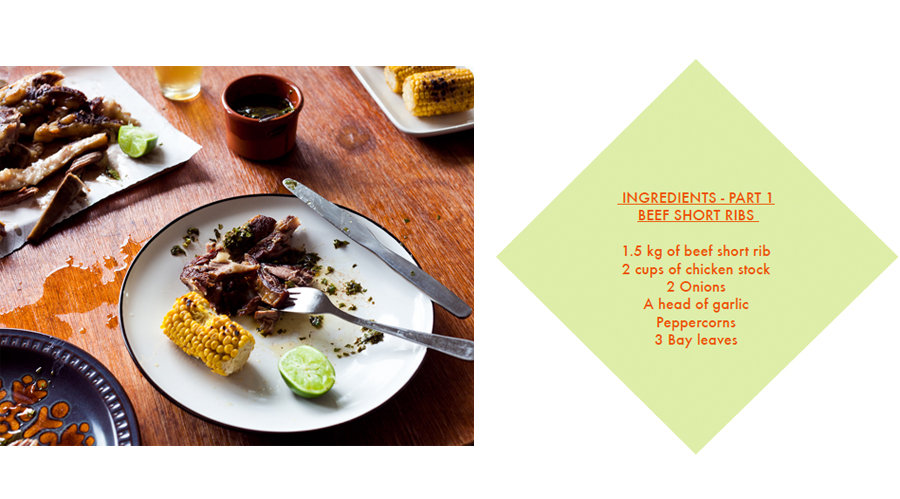
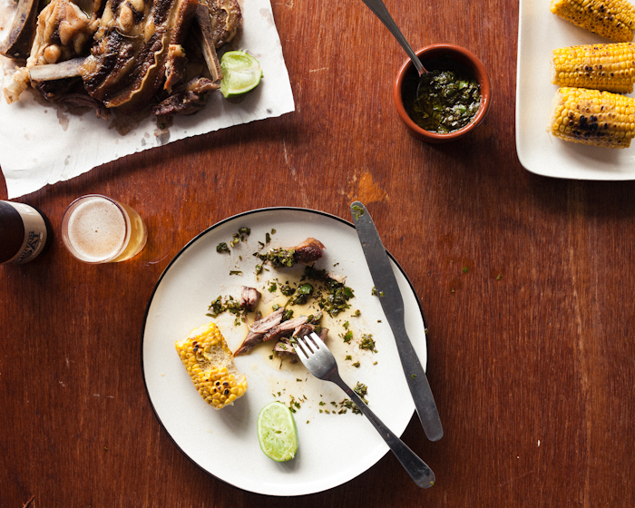
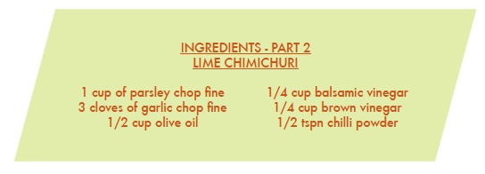

Beef ribs are highly underrated. And cheap. They require some
patience when cooking, but their amazing depth of flavour and beautiful
gelatinous texture make the results totally worth it. This will taste great
with barbecued corn on the cob and some fresh lime wedges to cut through
the richness of the meat.

Turn the oven on to 150 ºC. Trim off any unwanted bits of fat and season the ribs very well,
giving them a good massage with olive oil and plenty of sea salt and cracked pepper. Place
them in a baking dish with the quartered onions, broken-up garlic, bay leaves and some
peppercorns. Top the dish up a couple of centimetres with chicken stock. Cook for up to 4
hours, turning over the ribs after 2½ hours to make sure there’s still liquid in the bottom of the
tray, and topping up with water or more chicken stock if it’s drying out.


For the chimichuri, combine all ingredients and season to taste with salt and lime juice.
And finally, for the barbecued corn, blanch the corn cobs briefly in salted boiling water and cook
on a very hot barbecue or griddle. Brush down with butter throughout the cooking process.